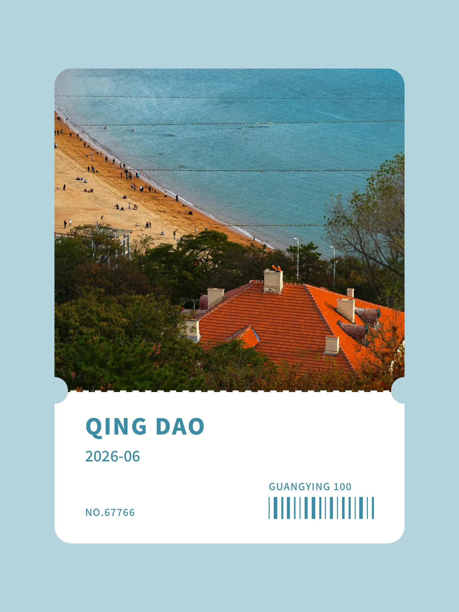

参数水印：品牌、机型与拍摄数据。
把相机品牌、机型、焦距、光圈、快门与 ISO 排进边框；支持自动读取照片参数，也能手动修改。
光影边框 · 手机照片与视频边框工具
从首页选一个模板，加入自己的照片。调整 Logo、相机型号、焦距、光圈、快门与 ISO，再把同一组照片批量保存到相册。
打开 App，实际就是这样用
下面展示实际 App 截图。切换步骤，查看对应的界面和操作。
模板首页 · iOS 实际截图
光影水印、背景模糊等模板按类别排列，先看预览再进入编辑。底部还有视频专区和我的，照片和视频的入口一眼能分清。
操作路径：首页 → 选择模板 → 相册选图
在自己的手机上体验以上均为 iOS App 实际界面；可点击查看大图，Android 与鸿蒙界面可能有所不同。
模板里，具体能做这些
下面是 App 内置模板的实际预览。
选好模板后，还可以继续调整文字、颜色、Logo 与布局。
把相机品牌、机型、焦距、光圈、快门与 ISO 排进边框；支持自动读取照片参数，也能手动修改。

在照片旁加入城市名称、日期与编号，调整主题、字色与圆角，让旅行记录以票根的形式呈现。

将照片配色与半透明卡片组合，配合布局、文字与背景细节，做出色卡与玻璃层次效果。
以上为 App 自带模板预览；具体可用模板以所用平台为准。
编辑页里，你能调整什么
常用模板可选择原图、16:9、3:4 或 9:16；结合上下左右边距、圆角与阴影，调整成图的空间。
选择内置品牌 Logo，或导入自己的素材；按模板调整 Logo 大小、文字、字体与颜色。
编辑页缩略图可以切换、继续添加或删除照片；把常用设置存成配方，下次直接复用。
视频专区可编辑水印、Logo 与参数；部分 iOS 模板支持 Live Photo 导入和输出，其他平台按实际版本使用。
先浏览分类和成图预览，选择边框、水印、票根或拼图模板。
单张或多张选入；进入编辑页后，还可以通过缩略图栏继续添加和切换。
按模板切换比例、Logo、参数、主题、阴影或边距，直接看上方预览。
批量保存后查看结果，再到系统相册找到作品；导出画质可在“我的”中设置。
网页摄影示意
简约留白、光影水印、旅行票根、玻璃色卡。
轻点下面的风格，感受边框为画面带来的变化。

01 / 选择风格
02 / 换张照片看看
山海 · 简约留白
这里是网页风格示意。更多版式与参数调整，请在 App 中体验。
关于光影
光影边框是一款围绕照片与视频边框创作的工具。我们希望把边框、文字、Logo 与模板设计变得简单，让你更轻松地整理和表达自己的摄影作品。
从一张日常记录，到一组旅行照片，再到带有自己签名的作品，好看的表达可以慢慢形成。基础功能免费，部分模板及增值服务通过会员提供。
下一张照片，换一种喜欢的方式
选择你的设备，开始创作。
从 App Store 获取。
需要 iOS 15 或更新版本。
手机访问时，优先前往对应品牌应用商店。
也可以手动选择商店。
前往华为应用市场，
获取适用于鸿蒙设备的版本。
请选择手机品牌，在对应设备的浏览器中打开应用商店。
没有打开商店？可手动切换品牌，或在应用商店搜索“光影边框”。微信等内置浏览器中，可通过右上角菜单选择在浏览器打开。
基础功能免费，部分模板或增值服务需会员。版本、价格、权益与可用功能以各平台 App 内展示为准。
品牌合作
如果你是商家、摄影创作者或器材品牌，
欢迎和光影团队聊聊模板定制、内容共创与摄影合作。
从自己的 Logo 到统一的照片边框，一起讨论专属模板、产品展示与社交分享中的视觉表达。
你有喜欢的拍摄主题、擅长的作品风格，或希望尝试的模板创意？欢迎一起交流和共创。
围绕相机、手机与摄影周边，一起探讨品牌水印、联名模板和适合摄影爱好者的内容。
有一个想法？从一封邮件，或一句微信开始。
联系光影团队风景、城市、人像和日常记录都可以。从简约留白或参数水印开始，再按照片内容选择票根、电影感、拼图等模板。具体支持的文件格式以所用平台为准。
可以。App 支持本地 Logo 与文字编辑；不同模板提供的字体、颜色、边距、参数和位置选项有所不同。你也可以把常用设置保存为配方。
请在“我的”中的导出画质设置里选择适合的质量，并尽量使用清晰原图。原图档仍会经过模板绘制与格式编码，成图尺寸也与照片、模板、格式和设备能力有关。
各平台的模板、实况照片、视频与会员权益可能存在差异。例如部分 iOS 模板支持实况输出。请以设备上的 App 和应用商店说明为准。